Proces
Dag 1: Maandag 4 juni
Op de eerste dag van HCI Labweken hebben wij vrijwel de gehele dag gewerkt aan het plannen van de komende dagen. Na een brainstorm sessie, waar een aantal uur overheen ging, zijn we gekomen tot het officiële concept: Een basketbalspel waar twee spelers tegen elkaar spelen. Als de bal door de hoop gaat, dan wordt er een punt opgeteld bij die speler. Na twee minuten wint degene die de meeste punten heeft behaald.
Dag 2: Dinsdag 5 juni
Ik heb vandaag gekeken naar gifjes die we kunnen gebruiken als animatie. Omdat ik mijn eigen twist wilde geven aan de gifjes, heb ik twee afbeeldingen gecombineerd. De eerste afbeelding is een blauwe vogel. Doormiddel van photoshop en flink wat geduld is het mij gelukt om de vogel vrijstaand te krijgen, zonder dat er rare figuren in beeld kwamen. 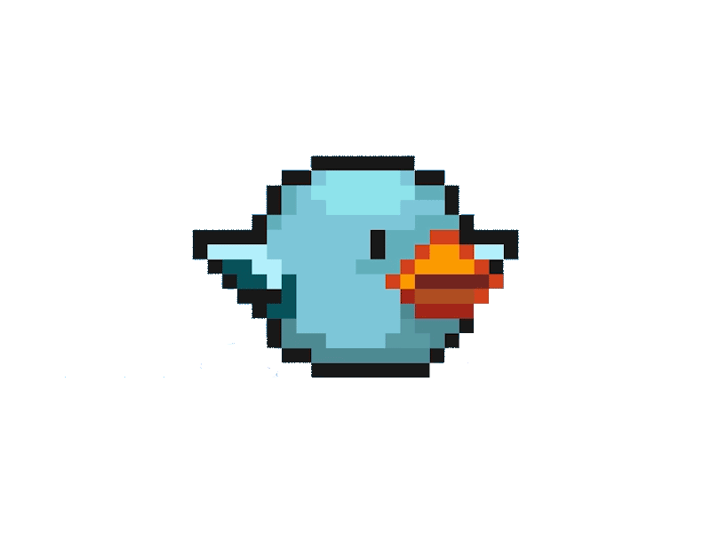 De tweede afbeelding is een pixel-art van een basketbalveld. Eerder vandaag heb ik geprobeerd om de animatie te creëren dat de bal door de hoop wordt gegooid door een poppetje in een animatie, maar ik ben uiteindelijk van dat idee afgestapt, omdat het mij niet lukte om een soepele animatie te maken. 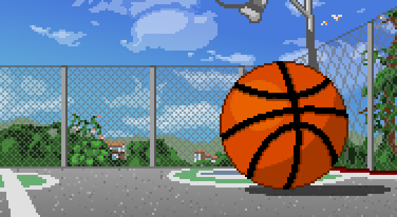 De rest van de middag ben ik bezig geweest met het maken van een begin aan het scoresysteem. Elke keer dat een lampje brandt, wordt er een punt opgeteld bij de score. Dit was erg lastig om voor mekaar te krijgen, maar dankzij hulp van onder andere Tim van der Bosch is het mij uiteindelijk wel gelukt;
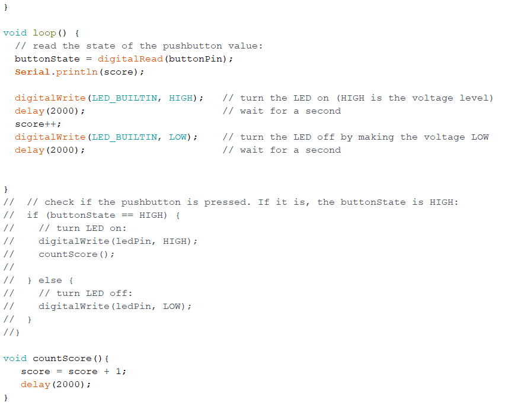Dag 3: Woensdag 6 juni
Vandaag heb ik de hele ochtend gewerkt aan het creëren van drie andere gifjes in Photoshop. Er zijn drie soorten gifjes: Eén voor in de ochtend, één voor in de middag en één voor in de avond. Het idee hierachter is dat wanneer de tijd verstrijkt, de plaatjes langzaam overgaan van ochtend naar avond. 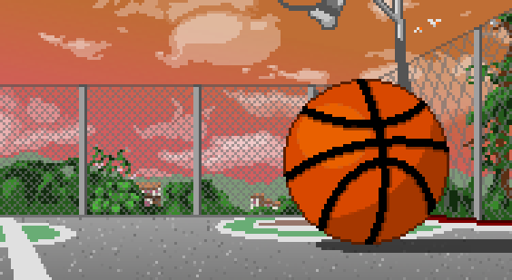 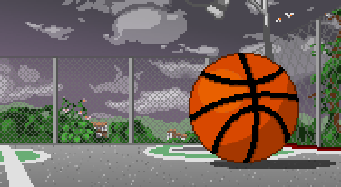 De rest van de middag heb ik de code gekoppeld met de achtergronden. Daarnaast heb ik tijd besteed aan het toevoegen van score en timer als tekst in processing en heb ik tevergeefs geprobeerd om de gifjes over te laten lopen door middel van een timer.
Dag 4: Donderdag 7 juni
Vandaag hebben we als groep de stukken code aan elkaar gekoppeld. Ik ben bezig geweest met het afmaken van de gifjes, terwijl Serghio de eerder gemaakte gifjes heeft geprobeerd aan de praat te krijgen in Processing. We hebben de gehele ochtend gezamenlijk geprobeerd om de gifjes aan de praat te krijgen, maar uiteindelijk is ons resultaat behaald d.m.v. video’s. Daarnaast ben ik verder gegaan met het laten verwisselen van het achtergrond na een bepaalde tijdshoeveelheid. Vandaag werkt dit door met if (else) statements aan te geven welke vier seconden welk achtergrond zich moet laten zien, maar morgen is het plan om bijvoorbeeld de laatste 30 seconden van het tijdlimiet (voor nu 2 minuten) het achtergrond voor de avond te laten zien.
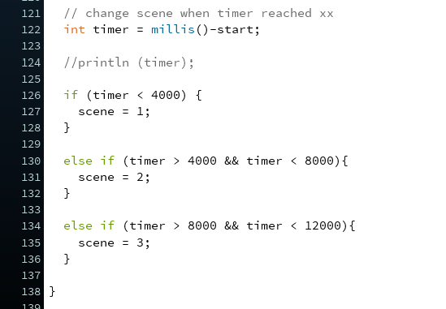Dag 5: Vrijdag 8 juni
Vandaag zijn we als groep voornamelijk bezig geweest met het afronden van de fases binnen het spel. Zo ben ik bezig geweest met het maken van de animatie die afspeelt als de gebruiker niet verder kan spelen. Serghio heeft gewerkt aan het maken van dit limiet, wat hij op twee minuten heeft ingesteld. We hadden enkele problemen met het soepel over laten van achtergronden naar elkaar. Gelukkig heeft Tim hier ons mee geholpen. Daarnaast heeft hij ons verteld dat het beter is als wij de animatie zelf maken, dus geen afbeeldingen pakken van het internet.
Dag 6: Maandag 11 juni
Vandaag heb ik een eigen animatie moeten maken, omdat de vorige animatie met de vogel niet door mij is gemaakt. Het is natuurlijk leuker als ons product zoveel mogelijk elementen bevat die door ons zelf is gemaakt.
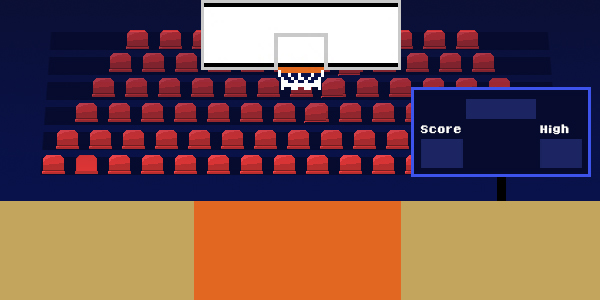Dag 7: Dinsdag 12 juni
Vandaag hebben we gekeken of we met madmapper de animatie via een beamer werkend konden krijgen. Dit heeft ongeveer de hele ochtend geduurd. Na een korte koffiepauze ben ik verder gegaan met de animatie. Tot nu toe heb ik alleen een basketbalveld gecreëerd met een score en een timer. De animatie heb ik vandaag uitgebreid met een basketballer de bal daadwerkelijk gooit door de hoop wanneer er een punt wordt gescoord.
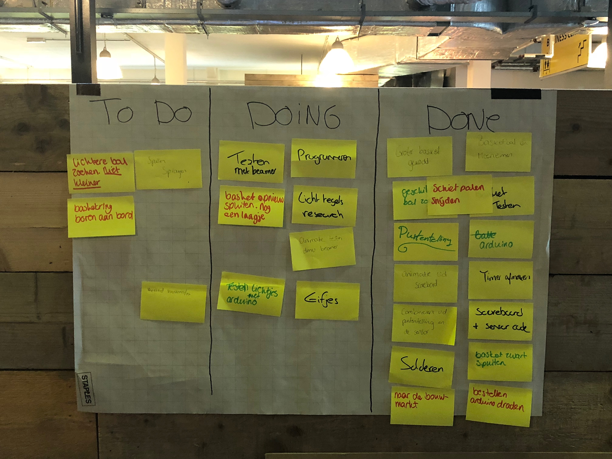 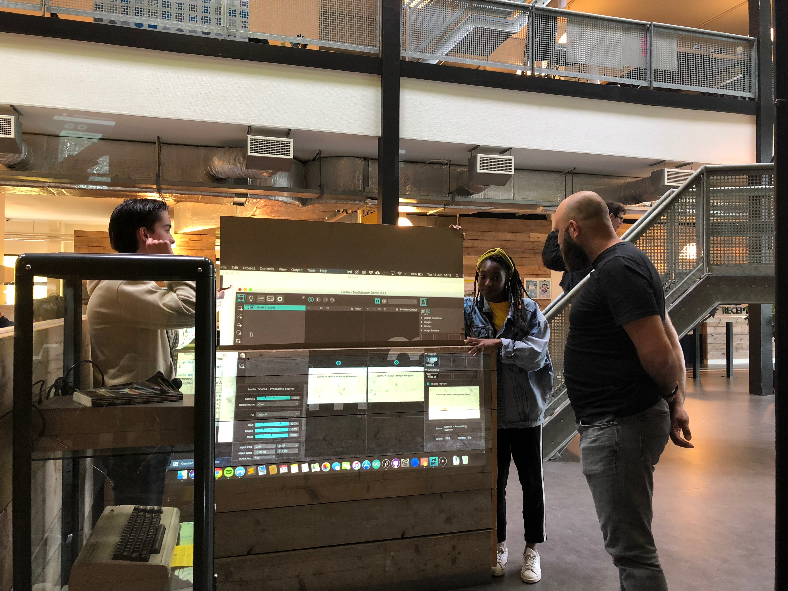 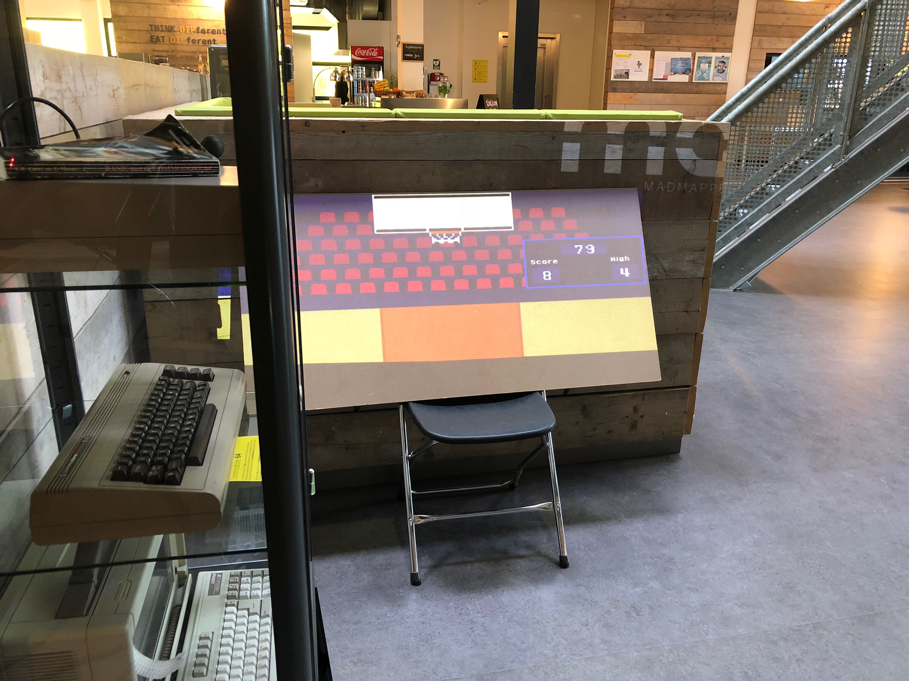Dag 8: Woensdag 13 juni
Vandaag zijn we als groep bezig geweest met het ophangen van de aan een houten opstelling. Na veel boren en veel koffie is het ons gelukt om het stevig genoeg op te hangen. Toen het eenmaal middag was, heb ik mij bezig gehouden met het toevoegen van details in het gifje. Tussendoor heb ik nog geholpen met de bouw van het bord. Er moesten een aantal schroeven worden gehaald en gevestigd in het hout. Richting het einde van de dag kwam ik met het idee om bij elk punt dat de speler krijgt, een extra poppetje op het tribune te plaatsen. Er staan nu twee poppetjes in, morgen ga ik ermee verder.
 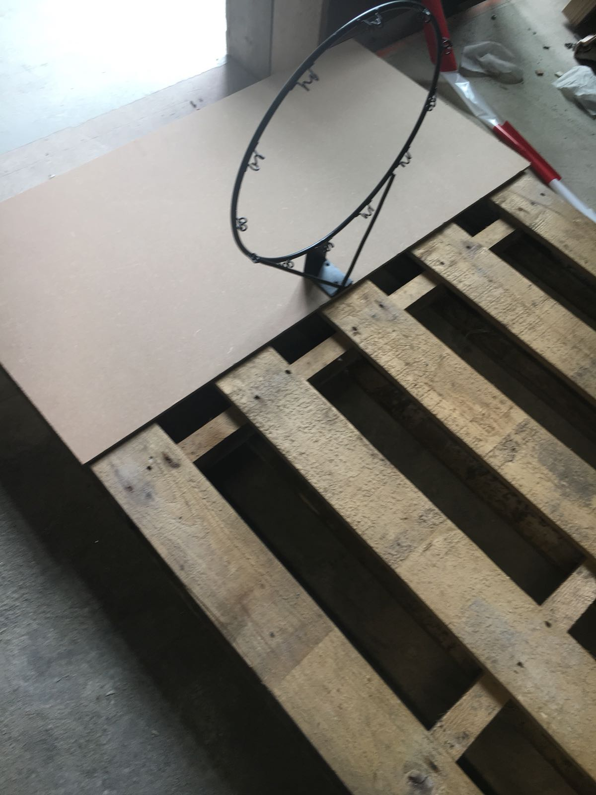
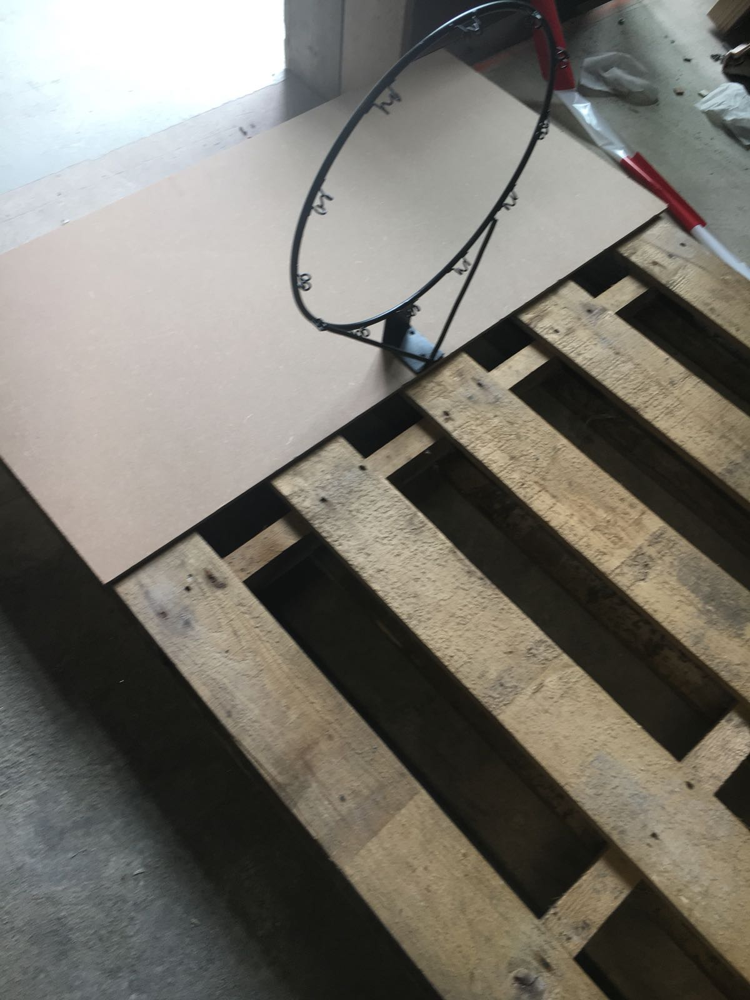
Dag 9: Donderdag 14 juni
In de ochtend heb ik tijd besteed aan het opzoeken van meer 8-bit poppetjes die op het tribune willen zitten. Vandaag hebben we ook besloten om niet bij elk punt poppetjes erbij te doen, maar om de zoveel punten. Desondanks is het een lang proces geweest vandaag om precies op elke transitie alle poppetjes op het juiste moment in te laten springen. Photoshop is misschien niet het meest handige programma geweest om hiervoor te gebruiken. Toen wij eenmaal onze definitieve plek hadden, konden we het ook uitstralen als onze plek. Het bord is op de juiste plek gezet en de plek waar de beamer op moet schijnen is wit geverft. Ik heb zelf geholpen met het bord verplaatsen, de arduino op z'n plek houden en de plek voor de beamer rondkaderen met doorzichtige tape, zodat hierin geverfd kon worden. Morgen is de Expo!
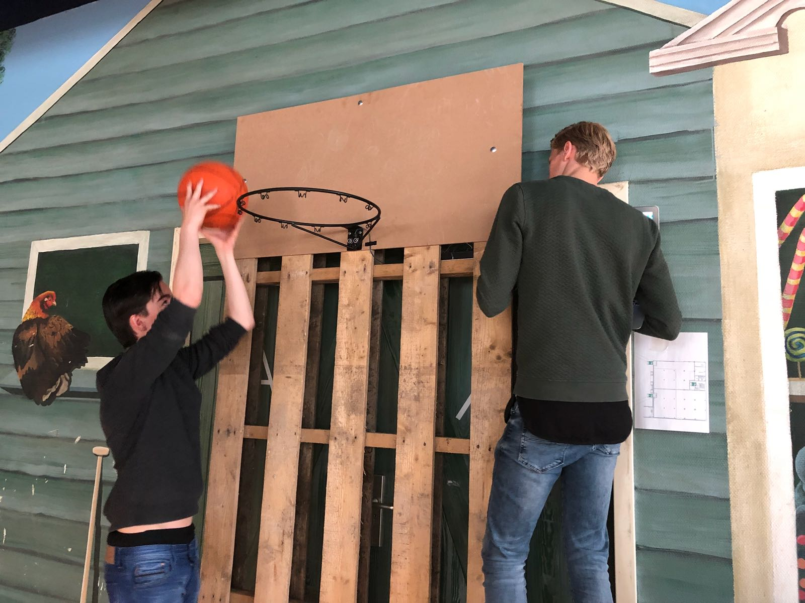 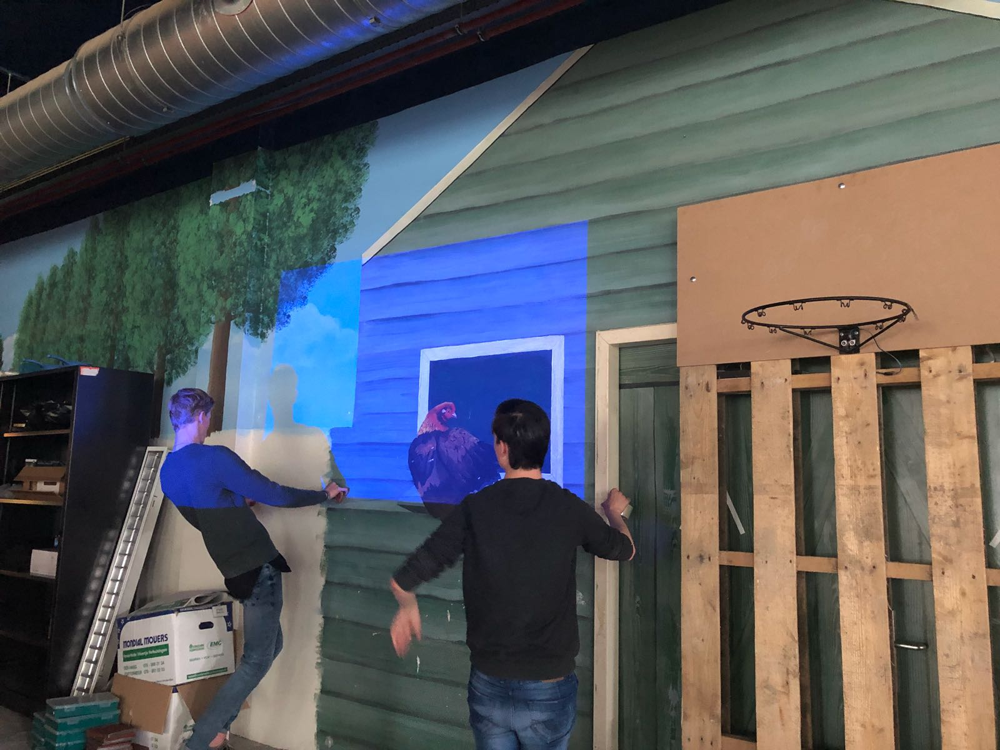Expo: Vrijdag 15 juni
De puntentelling deed het, het bord hing, maar alsnog moest ik nog de puntjes op de i zetten bij de animaties voordat de gasten kwamen. Zoals ik gister al moeite had met het correct de transities laten verlopen, is het vandaag nóg lastiger, omdat ik nóg meer poppetjes heb dan gister om in te laten springen. Telkens wanneer ik een score-fase af had geanimeerd, uploadde ik deze op drive en kon Serghio deze erin programmeren. Ongeveer een uur voordat onze pizza’s gearriveerd waren, was ons project gedaan. Helaas werkten de lichtpaaltjes niet zodat na elk schot de speler van positie moet veranderen. Wat uiteindelijk ontzettend mooi was, is dat er zo veel mensen langs kwamen om ons project niet alleen te checken, maar ook uit te proberen. Als ik mij niet vergis waren wij het meest bezochte project!
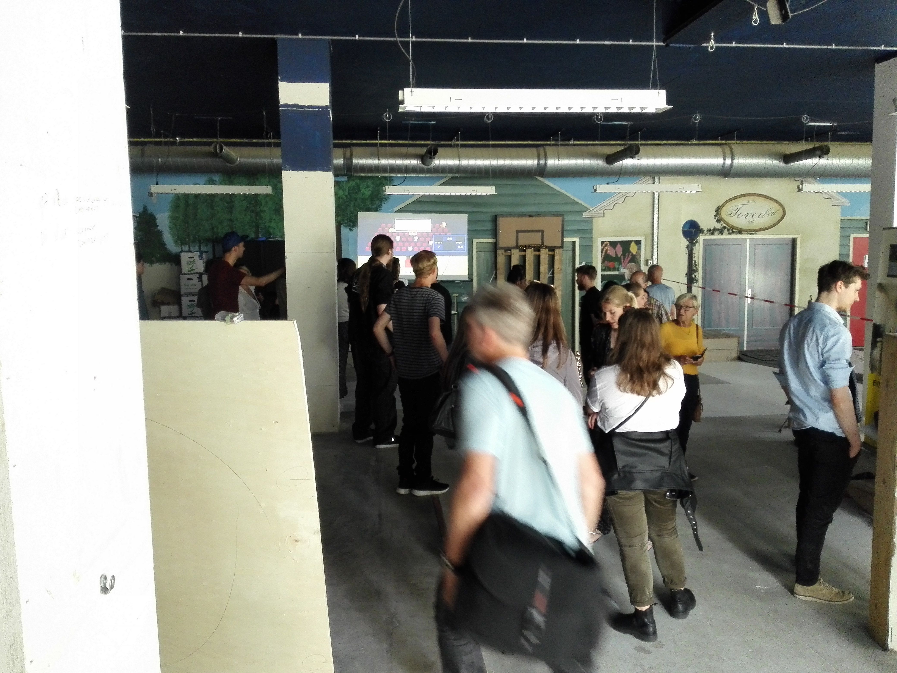